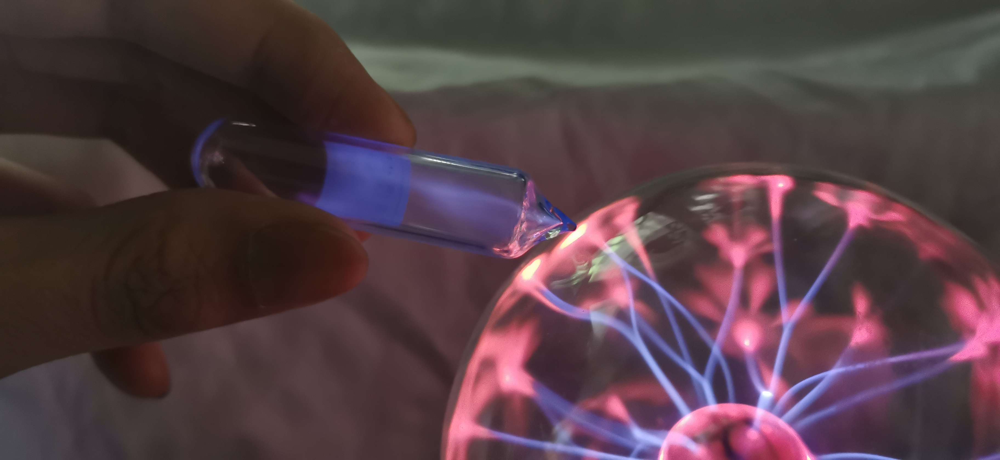
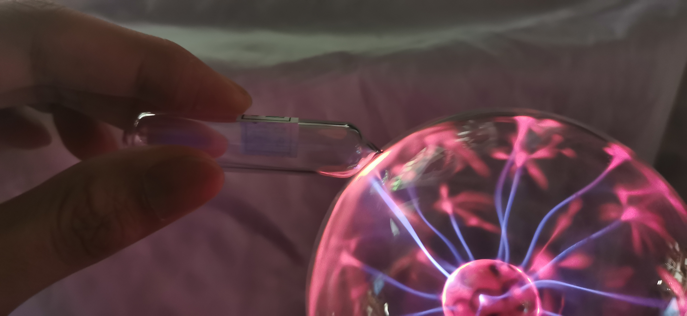
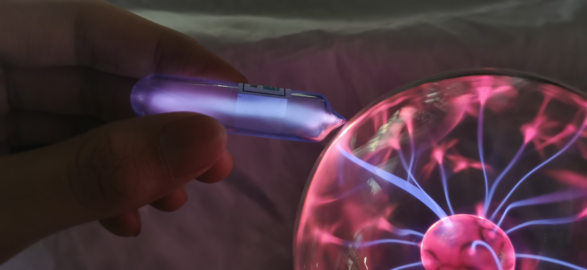
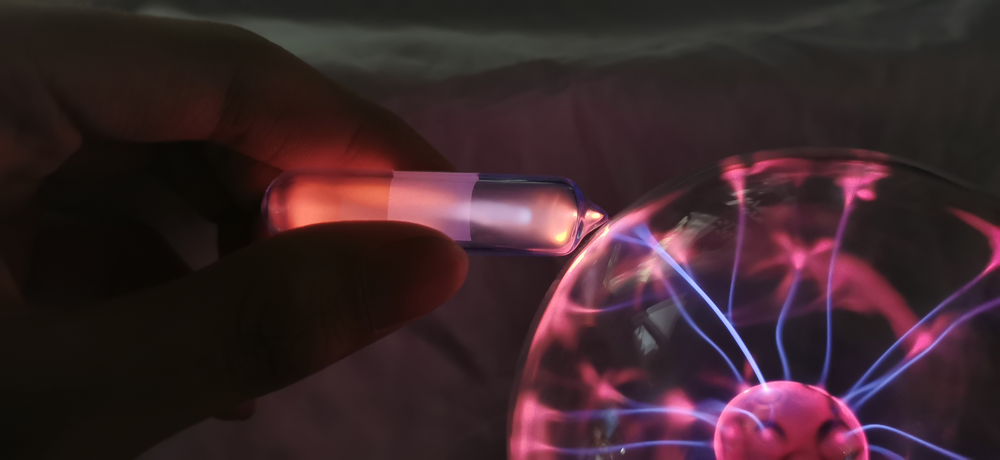
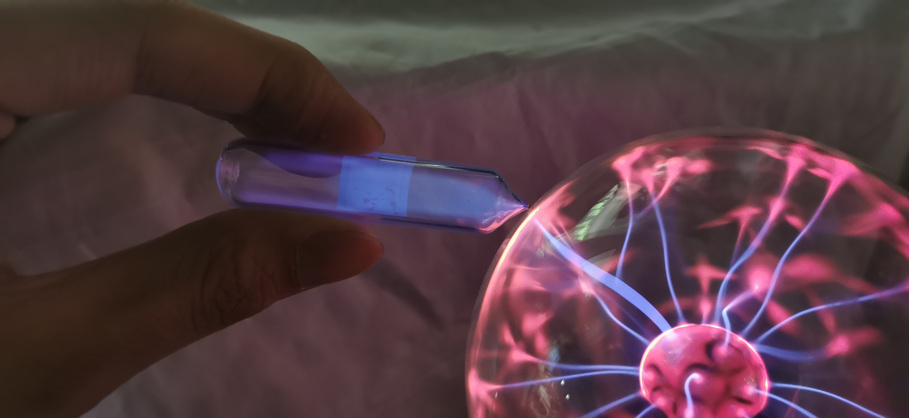
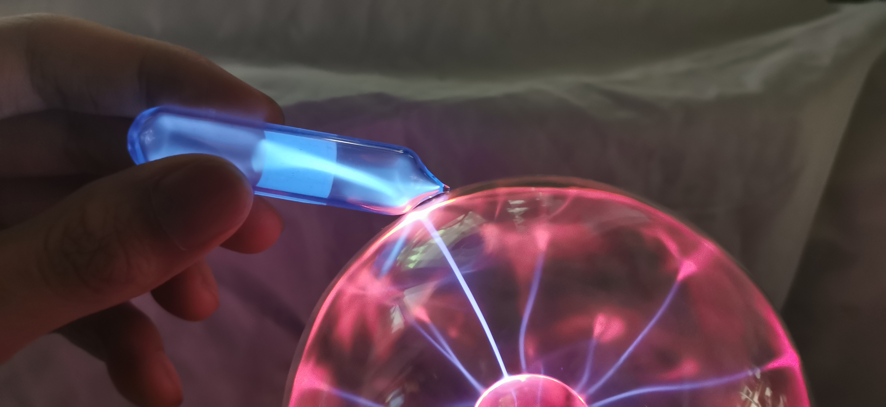
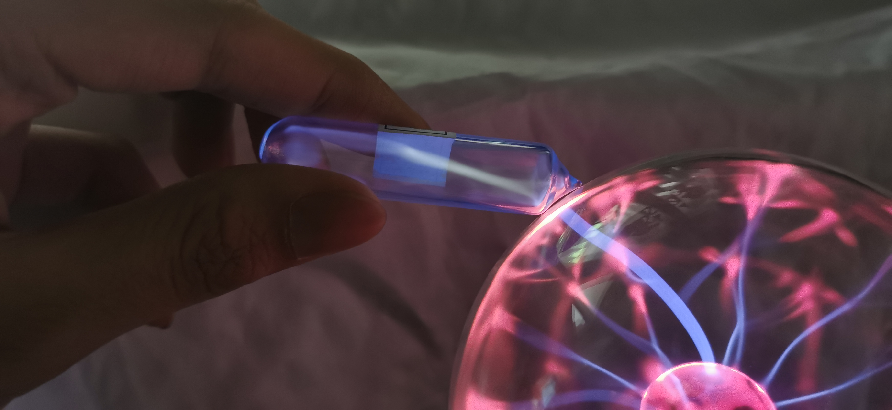
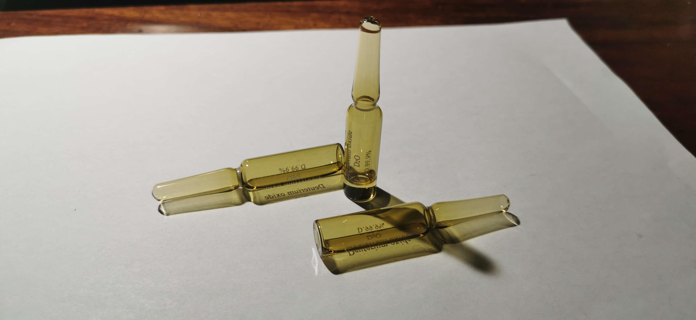
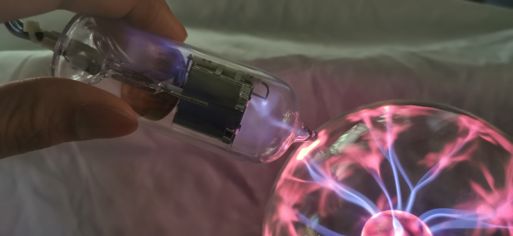

气体
说明：
对于像氢气、氧气、氮气稀有气体一类，我将它们总结到了一个页面，这样做也是为了方便考虑。实际上，任何元素在高温下都是气态，但包括氟、氯、溴、碘在内的其他气体都不属于此页面展示的范畴。
2019.5 天然氢 氧 氮 天然氦 氖 氩 氪 氙 来自冥灵
以下分别为：氢、氧、氮
 
以下分别为：氦、氖、氩、氪、氙
    | 性质 | He | Ne | Ar | Kr | Xe | Rn |
|---|---|---|---|---|---|---|
| 颜色 | 无色 | 无色 | 无色 | 无色 | 无色 | 无色（紫外光下有绿色荧光） |
| 放电颜色 | 黄色 | 橙色 | 蓝色 | 黄绿色 | 蓝绿色 | 深红色（有争议） |
将稀有气体通高压电，会产生明显的辉光，这种辉光来自于电子的跃迁，稀有气体原子吸收能量后电子由基态激发，在跃迁回基态的过程中又将能量以光的形式放出来，是电能与光能的转化。不同原子的光谱不同，因此展现出的辉光颜色各异。实际上，任何气体都有这样的性质，例如弗兰克-赫兹实验中使用的就是汞蒸气，但稀有气体原子基态更稳定，基态与激发态间能量间隔更大，因此辉光更明显。
氡：氡是放射性稀有气体，最稳定的同位素Rn-222半衰期约为3.8天，因此想要将氡气玻封在放电管中观察辉光是不现实、不实惠的。所谓不实惠并不是说不可能，主要是因为目前氡元素只在医疗上有极少作用，科研上价值尚少，因此很多大学不具备氡气室/氡发生器（有些网友用说是用镭衰变获得的，或者反驳镭衰变不能达到那种浓度，实际上像北京大学是有氡发生室和氡化学研究生的）；另外，别看氡气的半衰期很长，但它的衰变子体Po-218的半衰期只有3.05分钟，这样的短周期核素在体内产生“内照射”，会对器官造成严重的损伤。书中对氡辉光记载很少，我在网络上看到过氡气发射暗红色辉光的图片，但真伪难辨。
氡气发光图片出处：https://images-of-elements.com/radon.php

2019.6 重水 10×0.55mL 氘占比99.9% 来自美国Cambridge Isotope Laboratories 
氢的同位素：
| 性质 | 氕（¹H） | 氘（²H或D） | 氚（³H或T） |
|---|---|---|---|
| 半衰期 | 稳定 | 稳定 | 12.32年 |
| 自然占比 | 99.9885% | 0.0115% | 极少 |
对于氢元素，元素收藏圈一直以收集浓度较高的氘和氚代物全为目的；也许是因为只收集自然氢气本身太过容易，或者因为氢的稳定同位素很少便于获取，便于收集全。其实对于一些过渡金属，仍然有稳定同位素供应商，但相比于氘，就贵了很多。生产：对于氘，普通水经过电解富集氘后生产重水（D₂O），再通过化学方法生产氘气（D₂）；对于氚，通常是高层大气中的宇宙射线轰击氮气引起的核反应产物，1954年开始热核武器试验后浓度升高，禁核施行后又重新下降，目前主要通过中子撞击Li-6获得。
氘的氚在核工业有很大的作用（经实验，我国自来水中的锂似乎为此被调整过同位素浓度，消息不一定属实）；在日常生活中的氚样品主要是氚灯，也就是所谓的“β-灯”，靠放射性荧光使之发光12年左右，普通人很难收集到极贵的氚气或者超重水，因此氚灯是主要的氚收藏来源。另外，氚衰变后产生的He-4也是一种收集氦同位素的好方法（自然氦中主要是He-3）。
2019.7 氘灯 来自张Sir 
氘灯：氘灯是一种工业上应用广泛的紫外线光源，可以通过连接电路发光；在上图中，我发现使用高压灯也可以使其发光。而且，氘气的光芒要比自然氢的更明显。
氘气发光比自然氢更明显：https://images-of-elements.com/deuterium.php